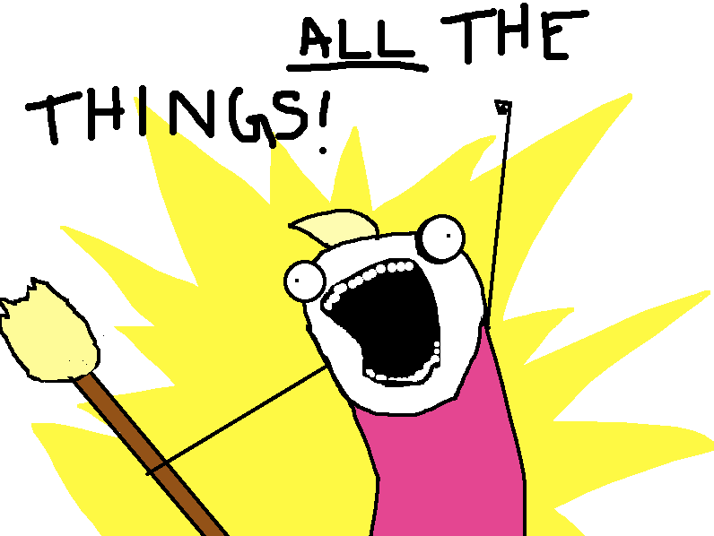
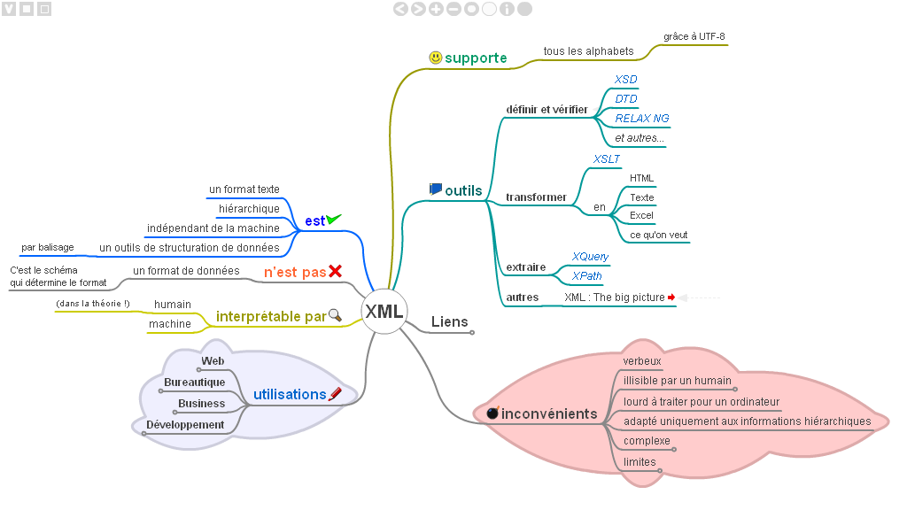
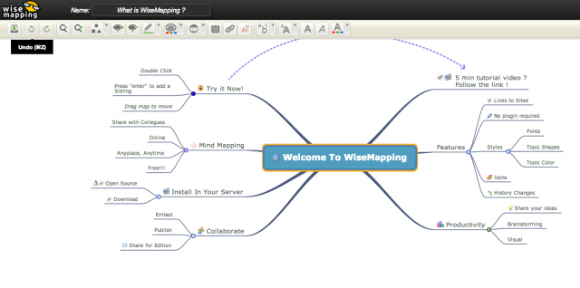

<!-- .element: data-state="first-slide" --> ## Mindmap web contrôlée par sms ## Bonjour ! <div style="display: flex; align-items: center"> <img src="avatar.jpg" alt="Une image d'avatar" style="border: none; width: 30%; height: 30%; margin-right: 2rem"> <div style="display: flex; flex-direction: column; text-align: left"> <p>**Lucas Cimon**</p> <p><i class="fa fa-pencil"></i> https://chezsoi.org + <i class="fa fa-rss"></i> [<img src="shaarli-icon.png" style="margin: 0; width: 3rem">](https://chezsoi.org/shaarli)</p> <p><i class="fa fa-map-marker"></i> [Voyages-Sncf.com Technologies](https://open.voyages-sncf.com)<br>@ Nantes</p> </div> </div> ## Mon téléphone est stupide **Pourquoi ?** <ul> <li class="fragment"><span style="color:#2aa198">**zen**</span> : je peux m'en passer, moins de [FOMO](https://fr.wikipedia.org/wiki/Fear_of_missing_out)</li> <li class="fragment"><span style="color:#6c71c4">**économique** </span> : je préfère dépenser mes sous ailleurs</li> <li class="fragment"><span style="color:LimeGreen">**écolo**</span> : resources pour le fabriquer + électricité</li> <li class="fragment"><span style="color:#dc322f">**raison n°1**</span> : j'en perds plusieurs par an 😝</li> </ul> ## Problème : où noter des trucs ?  Note: - pas d'appli, pas de connexion Internet - **brouillons ?** → je les perds tous avec le téléphone, et c'est pénible à recopier - **notes papier ?** → c'est le bordel, et il faut les recopier... ## 💡 twilio ! ```python client = Client(TWILIO_ACCOUNT_SID, TWILIO_AUTH_TOKEN) client.messages.create(body=msg, from_=src_number, to=dst_number) ``` <div class="fragment"> <span style="color:#dc322f"><i class="fa fa-exclamation mark"></i> _**Ce n'est pas le seul**_ <i class="fa fa-exclamation mark"></i></span> Il y a aussi: [bandwidth](https://my.bandwidth.com/portal/apidoc/2-x-supported-operations.htm), [bulksms](http://www.bulksms.com/products/sms-api.htm), [nexmo](https://www.nexmo.com/products/sms), [plivo](https://www.plivo.com/sms-api/), [sinch](https://www.sinch.com/products/sms-api/), [tropo](https://www.tropo.com/docs/scripting/quickstarts/sending-text-messages#tabs-4), [smsapi.com](https://github.com/elcodo/python-smsapi) </div> Note: - 1ère utilisation : envoyer un texto à ma copine à Dublin... comme j'avais perdu mon téléphone - exemple complet : https://github.com/Lucas-C/linux_configuration/blob/master/languages/python/send_text_msg_with_twilio.py ##  Note: - 1ère utilisation : envoyer un texto à ma copine à Dublin... comme j'avais perdu mon téléphone - 2 ans de "Free Trial" - utilisation + intensive -> ~30$ par an ## webhook ? <img src="https://s3.amazonaws.com/com.twilio.prod.twilio-docs/images/sms-http-request-cycle.width-800.gif" alt="Schéma animé expliquant le principe des webhooks"> ## Où stocker ces notes ? <img class="fragment" src="git-logo.jpg" style="max-height:10rem"> Note: faire sondage Les gens hurlent ? oui mais versionning + interface web d'édition ! ## Mise en place Note: + upstart Framework-less, lib-less Devrait être déployable sur heroku sans souci ## Démo ## Très vite... <pre style="padding: 5px"> penser à ... ménage truc à faire ... envoyer <chose> à machin... lire cet article de sam&max... ménage: urgent boulot: oubli pdb ? finir pull request Shaarli rendre livres à la bibli réserver vacs contrib wikipédia rendre blog accessible accrocher le cadre dans l'entrée nourrir le chat marquepager dernier lien de sebsauvage anniv soeur: c'était hier ? entretien voiture faille sécu: systemshock? changer de tél blog: suppr. compteur visites -> déprimant jdr: tuer les PJs ménage: !FAIT QQCH!! </pre> Note: 1ère version -> pas d'indentation / groupes ## 💡 mindmap ! J'utilisais [freeplane](https://www.freeplane.org) : <img src="FreePlane-200-175.png" alt="Logo 2 de reeplane" style="vertical-align: middle; width: 6rem">  ## Oui mais... - appli de bureau (pas web) en Java - ne mange pas de simple fichier texte :( ## 💡 wisemapping !  - open-source - utilisé par [Framasoft](https://framasoft.org/) - la partie "front" mange des fichiers XML simples ## Extraction du _viewer_  - _cf._ [article de blog](https://chezsoi.org/lucas/blog/rendering-deep-text-based-mindmaps-with-wisemapping-and-python.html) - <span style="font-size: 1.8rem">https://github.com/Lucas-C/wisemapping-mindmap-viewer</span> Note: ça va pas vous intéresser, c'est du JS ## Conversion .md → .xml  - en Python, avec [pyparsing](http://pyparsing.wikispaces.com) - `pip install brain_dump` ## Conversion .md → .xml Exécutée via `post-receive` hook par Gitlab: `/var/opt/gitlab/git-data/repositories/$group/$repo.git/custom_hooks` ``` #!/bin/bash cd "$(dirname "${BASH_SOURCE[0]}" )" exec > post-receive.log; exec 2>&1 cd .. GITLAB_PUBLIC=/opt/gitlab/embedded/service/gitlab-rails/public mindmap=braindump.md read old_sha new_sha branch_name git show $new_sha:$mindmap > $mindmap LANG=fr_FR.UTF-8 wisemapping_txt2xml.py --font-color white $mindmap \ > $GITLAB_PUBLIC/wisemapping-simple-viewer/samples/${f%.*}.xml rm $mindmap ``` Note: pas le meilleur parseur... ## Démo ## Pour résumer  Note: idées pour la suite - se passer de Twilio et utiliser une puce GSM ? ##  <span class="percent" style="font-size: 7.5rem">45%</span><span class="vs">vs</span><span class="percent" style="font-size: 5rem">30%</span> Note: garder en tête que tout le monde n'a pas un smartphone: * aujourd'hui dans le monde, c'est 30% de la pop mondiale (~ le double en France), avec une hausse de 2pts par an (fr.statista.com), mais dont la vitesse diminue * contre 75% de la population mondiale qui a un téléphone mobile, tout types confondus